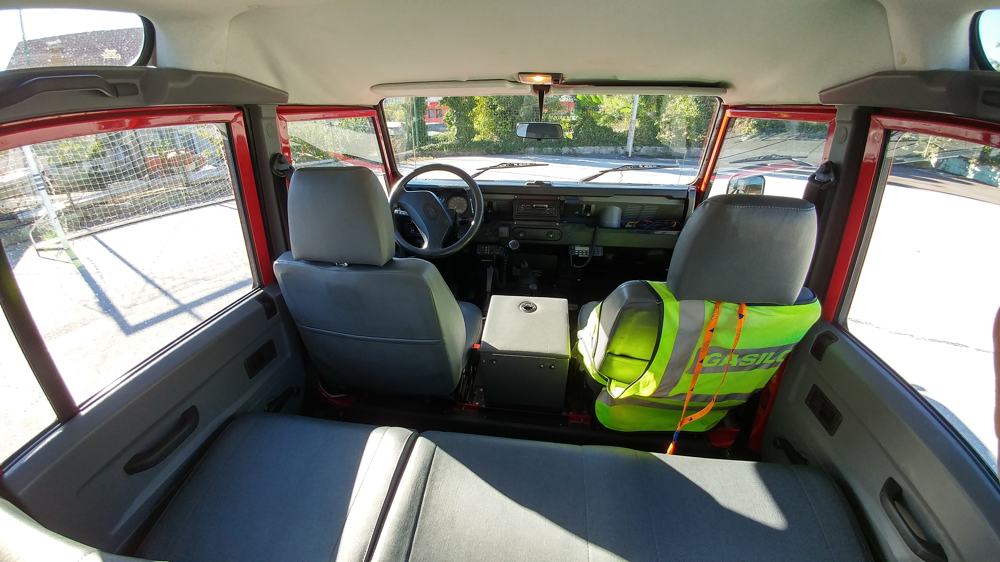
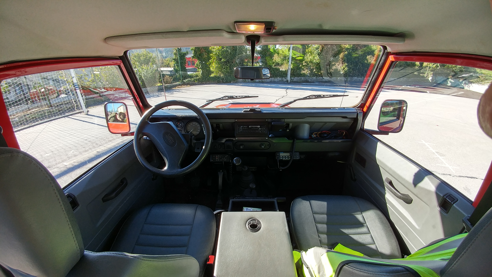
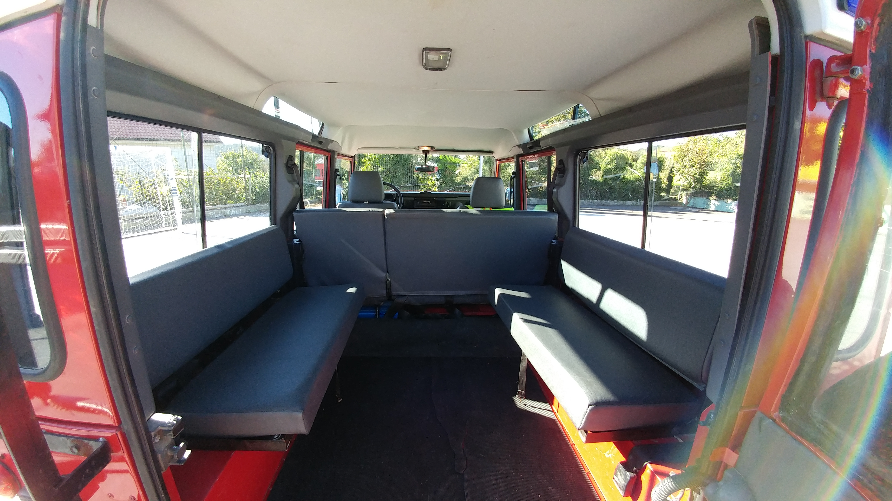
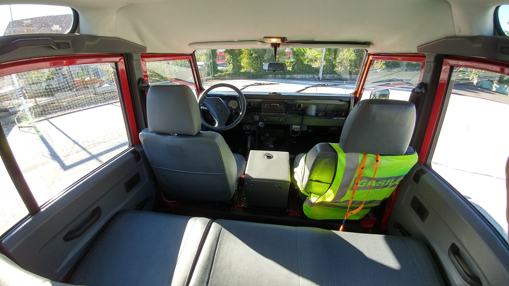
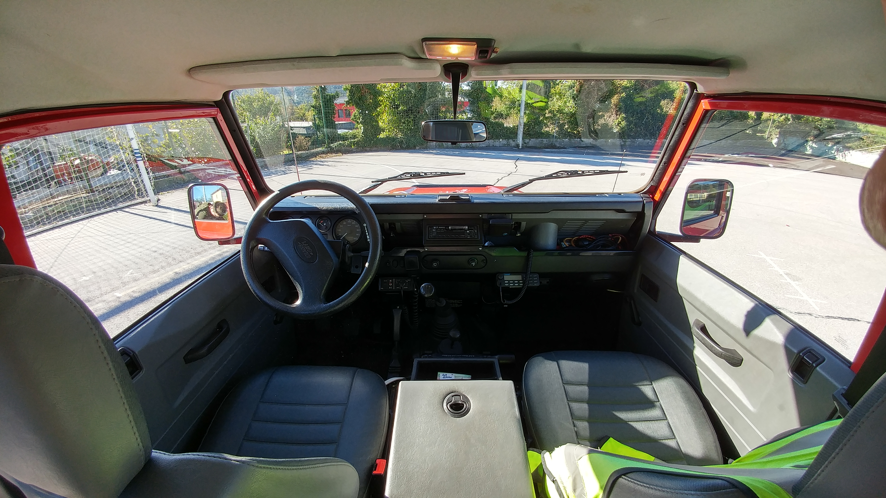
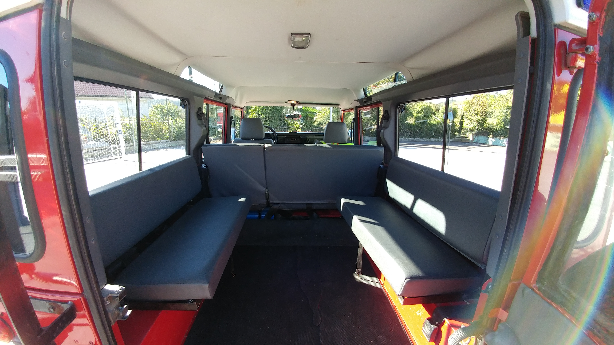
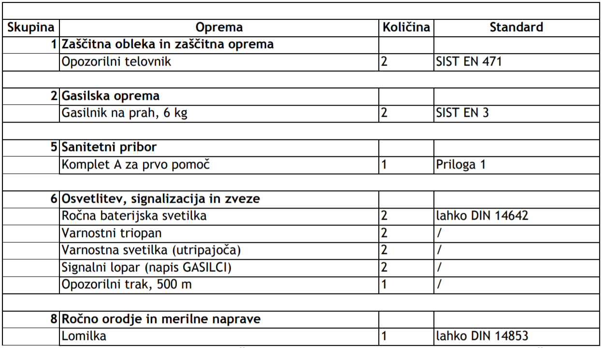
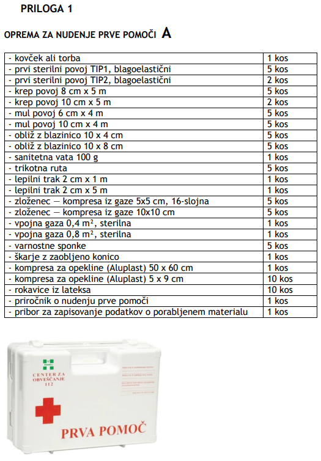

Gasilsko vozilo za prevoz moštva GVM-1 je vozilo za prevoz gasilcev in osebne opreme.
Posadka vozila je oddelek 1+8.
 





| Brand | Land Rover |
| Model | Defender 110 |
| Engine | 2.5 TD5 |
| Engine displacement | 2495 cm3 |
| Number of cylinders | 5 |
| Power | 122 hp/4200 rpm |
| Torque | 300 Nm/1950 rpm |
| Number of Gears (manual transmission) | 5 |
| Maximum speed | 130 km/h |
| Acceleration 0 - 100 km/h | 18.8 sec |
| Seats | 9 |
| Length | 4599 mm |
| Width | 1790 mm |
| Height | 2059 mm |
| Wheelbase | 2794 mm |
| Fuel tank volume | 93 l |
| Maximum volume of Luggage (trunk) | 2300 l |
| ABS | yes |
| Power steering | Hydraulic Steering |
| Fuel consumption (economy) - urban | 12.6 l/100 km |
| Fuel consumption (economy) - extra urban | 10.8 l/100 km |
| Fuel consumption (economy) - combined | 11.1 l/100 km |
| Kerb Weight | 2055 kg |
| Max. weight | 2950 kg |
Vozen je z B-kategorijo vozniškega dovoljenja, saj z največjo dovoljeno maso manjšo od 3500 kg upošteva normative Evropske skupnosti v zvezi z B-kategorijo vozniškega dovoljenja.
Splošne tehnične zahteve, ki jih gasilsko vozilo za prevoz moštva GVM-1 upošteva, so določene v standardih SIST EN 1846-1, SIST EN 1846-2 in SIST EN 1846-3.
Za podvozje smo uporabili serijsko izdelano vozilo Land Rover Defender. Glede na predvideno področje uporabe vozila, pa smo izbrali pogon 4x4.
V vozilo je vgrajena mobilna radijska postaja, ki deluje v analognem in digitalnem sistemu ZARE.
Nameščena oprema zadostuje zahtevam iz spodnje tabele.
 http://www.gasilec.net/uploads/datoteke/MarkoM/Tipizacija%20vozil_verzija%206_KONCNA_LEKTORIRANA.pdf
(25.9.2018)
https://www.auto-data.net/en/land-rover-defender-110-2.5-td5-122hp-5162
(25.9.2018)